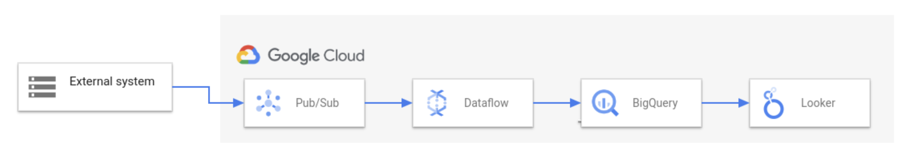

19. データ分析サービス¶
19.1. データ分析基盤¶
データ分析基盤とは、様々なデータを収集し、加工処理を施し、蓄積・分析して可視化・活用するまでの一連の基盤。
データの収集 → 処理 → 蓄積 → 分析 → 活用。まず「収集」フェーズで各種ソースからデータを集め、次に「処理」フェーズでETLによるデータの加工を行う。 その後「蓄積」フェーズでデータレイクやデータウェアハウスにデータを保存し、「分析」フェーズで蓄積したデータにクエリや解析を実施。 得られた知見を「活用」フェーズでダッシュボード可視化やアプリケーションへの組み込みによってビジネスに役立てる。 この一連の流れを支える各種GCPサービスが相互に連携して、スムーズなデータパイプラインを構築できるようになっている。

Dataflow の概要データ分析基盤を考える上で重要な概念を整理しておく。
項目 |
役割・目的 |
データの状態 |
主な利用者・用途 |
GCPの代表サービス |
|---|---|---|---|---|
データレイク |
さまざまなソースから集めた生のデータを大量に蓄積する |
未加工・非構造化・多様 |
後で必要に応じて分析・加工 |
Cloud Storage |
ETL |
データを抽出し、変換・加工し、保存先にロードする一連の処理フロー |
処理プロセス |
データ整備・統合 |
Dataflow, Dataprocなど |
データウェアハウス |
分析に適した形に整理・構造化したデータを集積する |
加工済み・構造化 |
共通指標やビジネス分析用 |
BigQuery |
データマート |
特定用途や部門向けに必要なデータだけを切り出して提供する |
加工済み・構造化（用途特化サブセット） |
部門・チームごとの個別分析 |
BigQuery（マート設計で分離） |
GCPのデータ基盤は、次の流れで考えると整理しやすい。
データ発生
↓
収集
Pub/Sub, Datastream, Cloud Storage
↓
処理
Dataflow, Dataproc, Cloud Composer
↓
蓄積
Cloud Storage, BigQuery, Cloud SQL, Bigtable
↓
分析
BigQuery, Looker
↓
活用
BI, API, ML, 業務アプリケーション
19.2. 収集¶
最初のフェーズである「収集」では、様々なソースからデータを集めてくる。データのソースには、例えばアプリケーションから発生するログやイベントデータ、IoTデバイスが出力するセンサーデータ、また企業の業務システムで利用されるデータベースなどが含まれる。
GCPにはリアルタイムデータを取り込むためのサービスと、データベースからのデータ抽出に適したサービスが用意されており、代表的なものが Cloud Pub/Sub と Datastream である。
19.2.1. Cloud Pub/Sub¶
Cloud Pub/Sub は、GCPのリアルタイムメッセージングサービスである。Publish/Subscribe（発行購読）モデルに基づき、データの送信元（パブリッシャー）と受信側（サブスクライバー）を非同期メッセージキューでつなぐことで、大量のイベントデータをスケーラブルかつ安定的に受け渡しできる。
Pub/Subはフルマネージドサービスであり、自動でスケーリングするため、突発的な大量データ流入にも耐えられるのが特徴だ。データ分析基盤においては、ストリーミングデータのパイプ役として機能し、後段のDataflowなど処理基盤にリアルタイムデータを渡すハブとなる。
19.2.2. Datastream¶
Datastream はデータベースの内容をリアルタイムに他システムへ複製（レプリケーション）するためのサービスである。具体的には、ソースとなるRDBMS（リレーショナルデータベース）の更新履歴を取得し、追加・変更・削除されたデータを継続的にストリーム配信する。これを Change Data Capture (CDC) と呼び、DatastreamはCDCのマネージドサービスと位置付けられる。
Datastreamでストリーム取得したデータの送り先（デスティネーション）としては、BigQuery もしくは Cloud Storage を選択できる。BigQueryを指定した場合は、データベースの変更データが直接リアルタイムにBigQueryのテーブルへ反映される。Cloud Storageを指定した場合は、更新ログが一旦オブジェクトファイル（例えばCSVやJSON）としてストレージに書き出される。この後者のケースでは、蓄積されたファイルを次の処理フェーズで読み込んで変換し、BigQueryなどにロードすることになる。
19.3. 処理¶
「処理」フェーズでは、収集したデータに対してクリーニング（不要なデータの除去や欠損値の補完）、変換（フォーマット統一や集計計算）、結合（他データセットとのマージ）などの加工を行い、分析に適した形に整える。これはまさに前述したETL（抽出・変換・格納）の核となる部分。
GCPでは、このデータ処理パイプラインを担うサービスとして Dataflow と Dataproc が代表的。
19.3.1. Dataprep¶
Dataprep（旧 Trifacta）は、GUIベースでデータのクレンジングや変換を行うためのサービスで。
DataflowやDataprocがコードベースでETLを実装するのに対し、Dataprepはノーコードまたはローコードでデータ変換を実施できることが特徴。
利用者はブラウザ上のGUIからデータを確認しながら、
列の削除
型変換
NULL補完
重複除去
文字列整形
列の分割・結合
などの変換処理を定義できる。 Dataprepでは変換内容をRecipe（レシピ）として保存し、毎月同じレシピを再実行可能
例
id,name,email
↓
Recipe
- email列を小文字化
- 不要列削除
- 日付形式統一
↓
変換済みデータ
19.3.2. Dataflow¶
Dataflow は、Google Cloudの提供するフルマネージドかつサーバーレスなデータ処理サービスであり、ストリーミング処理とバッチ処理を単一のモデルで実現できるのが特徴。
ユーザーはJavaやPythonでデータの流れ（パイプライン）をコードとして定義する。そのパイプラインをDataflowサービス上にデプロイするだけで、必要なリソースが自動的にプロビジョニングされスケーリングも自動で行われる。 要するに、大量データの並列処理基盤を意識することなく、データの読み込み→変換→出力という一連の処理ロジックに専念できるのがDataflowの利点。
Dataflowはストリーミングとバッチの双方に対応するため、多様なユースケースで利用される。例えばリアルタイム処理の例では、先の収集フェーズでPub/Subに流れてきたイベントデータをDataflowが即座に読み取り、例えば1分ごとの集計やフィルタリングを行ってからBigQueryに書き込む、というストリーミングETLパイプラインを構築できる。またバッチ処理の例では、毎日生成されるログファイルをCloud StorageからDataflowでまとめて読み込み、不要な項目を除去したりフォーマット変換した上でBigQueryにロードするといった定期バッチETLも可能。
19.3.2.1. Dataflowのウィンドウ¶
ストリーミングデータは終わりがない。 そのため、無限に流れてくるデータをそのまま集計することはできない。 そこで、どの範囲のデータをひとまとまりとして扱うかを決めるのがウィンドウ。
ウィンドウ |
区切り方 |
用途 |
例 |
|---|---|---|---|
固定ウィンドウ（Fixed Window） |
固定時間ごとに区切る |
一定期間ごとの集計 |
1分ごとのアクセス数、5分ごとの平均気温 |
スライディングウィンドウ（Sliding Window） |
一定幅のウィンドウを一定間隔でずらしながら集計する |
直近N分間の移動平均や傾向分析 |
直近10分間の平均を1分ごとに更新 |
セッションウィンドウ（Session Window） |
イベントが継続している間を1つのウィンドウとして扱う |
ユーザー行動や断続的なイベント分析 |
15分間データが来なければ終了、30分以上続く騒音イベントの平均値 |
ウィンドウのイメージ
ウィンドウ |
イメージ |
|---|---|
固定（タンブリング）ウィンドウ |
00:00〜00:05、00:05〜00:10、00:10〜00:15 |
スライディングウィンドウ |
00:00〜00:10、00:01〜00:11、00:02〜00:12 |
セッションウィンドウ |
イベント到着に応じて動的に決定 |
19.3.2.2. Dataflowのラグ¶
Dataflowで扱うデータがどこでどれだけ時間がかかっているか
項目 |
意味 |
確認したいこと |
|---|---|---|
System lag |
Dataflow内部の処理遅延 |
Dataflowが処理しきれているか |
Data freshness |
出力データの鮮度 |
利用者から見てデータがどれくらい古いか |
eventTimestamp |
イベント発生時刻 |
実際に起きた時刻 |
publishTime |
Pub/Subへ投入された時刻 |
メッセージ化された時刻 |
例
eventTimestamp
↓ 3秒
publishTime
↓ 2秒
Dataflowが受信
↓ 5秒
BigQueryへ出力
この場合
eventTimestamp → publishTime = 3秒
System lag = 2秒
Data freshness = 10秒
19.3.2.3. Dataflowワーカーノードの相互通信¶
Dataflow ワーカーノードは、内部での調整やデータ交換のために相互に通信する必要があり、この通信には、デフォルトで TCP ポート 12345 および 12346 が使用される。
19.3.3. Dataproc¶
Dataproc は、Apache HadoopやSparkといったビッグデータ処理フレームワークをクラウド上で動かすためのマネージドサービスである。 平たく言えば「GCP上で簡単にHadoop/Sparkクラスタを作って使えるサービス」であり、既存のオープンソースビッグデータツール群を活用したい場合に適している。
19.3.3.1. Dataproc Metastore¶
Dataproc Metastoreは、Hive Metastore互換のメタデータ管理サービス。 ParquetファイルそのものはCloud Storageに置き、テーブル定義やスキーマなどのメタデータをMetastoreで管理する。
SparkやHiveは、ファイルだけでなく、テーブル名、列名、パーティション情報などのメタデータを必要とする。 Cloud StorageにParquetを置いただけでは、既存Spark処理が期待するテーブルメタデータが不足する場合がある。
そのため、データはCloud Storage、メタデータはDataproc Metastoreという構成にする。
19.3.4. Cloud Composer¶
Cloud Composerは、Apache Airflowのマネージドサービス。 DAGを使って、複数の処理タスクの依存関係や実行順序を管理する。
19.3.5. DAG¶
DAGはDirected Acyclic Graphの略。 有向非巡回グラフという意味。 データ処理では、タスクの依存関係を表す。
例
extract
↓
transform
↓
load
19.3.6. ComposerとDataflowの違い¶
Composer
ワークフローを管理する
いつ、どの順番で、どの処理を起動するかを制御する
Dataflow
データそのものを処理する
変換、集計、フィルタリングを行う
Composerは指揮者、Dataflowは実際の処理エンジンと考えると分かりやすい。
19.4. 蓄積¶
「蓄積」フェーズでは、処理済みのデータを長期間保存し、後から効率よく参照・分析できる状態にする。前述のデータレイクとデータウェアハウスという概念がここで具体的な形となる。
GCPにおいてデータ蓄積の中核をなすサービスが Cloud Storage と BigQuery である。
19.4.1. Cloud Storage¶
Google Cloudのオブジェクトストレージサービスだ。ファイルやオブジェクトをほぼ無制限に保存でき、堅牢な耐久性と可用性を備えている。Cloud Storageは構造化データ・非構造化データを問わず格納できるため、分析基盤ではデータレイクとして機能する。
Cloud Storage上のデータは、前述のDataflowやDataprocといった処理系から直接読み書きできる。DataflowではCloud Storage上の新規ファイル出現をトリガーに処理を開始する仕組み（Cloud StorageのPub/Sub通知機能）も利用でき、データの着地地点としても使い勝手が良い。
19.4.2. Dataplex¶
Dataplexは、BigQueryやCloud Storageに存在するデータを統合的に管理するサービス。 Dataplexでは、データを以下の階層で整理する。
階層 |
役割 |
例 |
|---|---|---|
Lake |
データ全体をまとめる単位 |
Customer Lake |
Zone |
用途や品質ごとの区画 |
Raw Zone、Curated Zone |
Asset |
実際のデータ |
BigQuery Dataset、Cloud Storage Bucket |
構成イメージ
Customer Lake
├─ Raw Zone
│ ├─ customer_raw_bucket
│ └─ transaction_raw_bucket
│
└─ Curated Zone
├─ customer_dataset
└─ sales_dataset
19.4.2.1. データメッシュ¶
データを中央チームが一括管理するのではなく、部門ごとに所有・管理する考え方。 Dataplexはデータメッシュを実現するための管理基盤として利用される。
19.4.2.2. Dataplexの権限管理¶
Dataplexを使わない場合
分析チーム
├─ Dataset A
├─ Dataset B
├─ Dataset C
├─ Bucket A
└─ Bucket B
各リソースごとにIAM設定が必要。
Dataplexを使う場合
Customer Lake
└─ Curated Zone
↑
│ dataplex.dataReader
│
分析チーム
Zone単位で権限管理できるため、配下のBigQueryやCloud Storageをまとめて管理しやすい。
ロールの例
ロール |
付与先 |
用途 |
|---|---|---|
dataplex.dataOwner |
Lake |
データ基盤全体の管理 |
dataplex.dataReader |
Zone |
分析ユーザー向け参照権限 |
19.4.3. BigQuery¶
BigQueryは分析フェーズでも解説するが、蓄積フェーズの一面も持つ。 GCPが提供するエンタープライズ向けのデータウェアハウス。BigQueryはテーブル形式の構造化データをペタバイト規模まで保存でき、標準SQLによる高速なクエリ実行を可能にしている。 サーバーレス型の完全マネージドサービスで、ユーザーはインフラ管理を意識せずにデータの格納と分析処理に集中できる。 蓄積フェーズにおいては、DataflowやDataprocで処理された後のクレンジング済みデータをBigQueryにロードすることで、分析に最適化された状態で保存しておく役割を果たす。
BigQueryはデータを保存するだけでなく後続の分析クエリに対して高い性能を発揮するよう列指向かつ圧縮されたフォーマットでデータを保持している。 また、パーティショニングやクラスタリングといった機能で大量データを効率よく整理することも可能。
BigQuery のクエリには
「インタラクティブ（即時）」
「バッチ（Batch）」
の2種類の優先度がある。 バッチジョブとして実行すると、BigQuery 共有リソースのアイドル状態を利用して処理されるため、他の重要なインタラクティブクエリの邪魔をしない。
19.4.3.1. データ取り込み方法の比較¶
BigQueryへデータを取り込む方法はいくつか存在する。
方法 |
主な用途 |
リアルタイム性 |
コスト |
特徴 |
|---|---|---|---|---|
ロードジョブ（Load Job） |
Cloud Storage上のファイルをBigQueryへ取り込む |
低い（バッチ） |
安い |
大量データ取り込みの基本手段 |
ストリーミング挿入（Streaming） |
リアルタイムデータ取り込み |
高い |
やや高い |
イベントデータを即時反映可能 |
Storage Write API |
大規模ストリーミング |
高い |
ストリーミング課金 |
高スループット・低レイテンシ |
外部テーブル（External Table） |
Cloud Storage上のデータを直接参照 |
なし |
クエリ課金のみ |
データ移動不要 |
BigQuery Data Transfer Service |
SaaSやDWHからの定期取り込み |
定期実行 |
管理コスト低い |
マネージド転送サービス |
Datastream |
DB変更データの継続同期 |
高い |
中程度 |
CDCによるリアルタイム同期 |
Dataflow |
複雑なETLを伴う取り込み |
高い/低い両方 |
処理量次第 |
変換しながらロード可能 |
19.4.3.2. BigQueryのロードジョブ¶
Cloud StorageにあるデータをBigQueryに取り込む場合、ロードジョブを使うと低コストに取り込める。 毎日数TBのJSONファイルをBigQueryに読み込むようなケースでは、外部テーブルに対してINSERT SELECTするより、BigQueryロードジョブを使う方が適している。
外部テーブル
Cloud Storage上のファイルをBigQueryから直接参照する
データはBigQueryに格納されない
クエリ時にCloud Storage上のデータを読む
ロードジョブ
Cloud Storage上のファイルをBigQueryテーブルに取り込む
取り込み後はBigQueryのストレージに保存される
分析に最適化された形で扱える
19.5. 分析¶
分析フェーズでは、データから有用な知見や指標を引き出すために、クエリを発行したり統計・機械学習手法を適用したりする。GCPにおける主要な分析エンジンは引き続き BigQuery である。
19.5.1. BigQuery¶
BigQueryは蓄積フェーズでも登場したが、その本領は強力な分析処理にある。 BigQueryはOLTPではなくOLAP向け。
OLTP
アプリケーションの細かい更新や参照に向く
例: 注文登録、ユーザーログイン
OLAP
大量データを集計・分析する用途に向く
例: 月別売上集計、ユーザー行動分析
BigQuery上のデータに対しては、ユーザは標準的なSQL言語でクエリを実行できる。 例えば、「月別の売上合計を商品カテゴリごとに集計する」といったSQLを投げれば、BigQueryの背後で多数のサーバーが並列処理を行い、膨大なレコードに対しても数秒〜数十秒程度で結果を返す。 これにより、従来のオンプレミスデータベースでは何時間もかかっていたような集計分析が、インタラクティブな速度で可能となる
分析フェーズでは、BigQuery上に蓄積されたデータから自由に必要な視点で取り出せるとはいえ、全社データがすべて一箇所にまとまっているとそのスキーマ（構造）は非常に巨大かつ複雑になることも多い。そこで、しばしば大規模なデータウェアハウスから派生して、特定分野に特化したデータマートが作られる。 データマートは前述の通り、特定部署や用途向けのサブセットだが、実際の実装としてはBigQuery内で特定のプロジェクト・データセットに限定したテーブル群として構築されたり、ビューを用いて元のデータウェアハウスから必要項目だけを切り出して提供したりする。
19.5.1.1. BigQueryの列指向¶
BigQueryは列指向でデータを扱う。
行指向では、1行の中にある複数列をまとめて読む。
列指向では、必要な列だけをまとめて読む。
分析クエリでは、すべての列を読むより、一部の列だけを読むことが多い。（特定列を分析するため）
例
売上分析で必要な列
date
product_id
amount
不要な列
customer_address
note
raw_payload
列指向なら必要な列だけを読むため、スキャン量を減らしやすい。
19.5.1.2. BigQueryのネストと繰り返しフィールド¶
BigQueryでは、親子関係をネストされた繰り返しフィールドで表現できる。
例
sales_transaction_header
transaction_id
store_id
transaction_time
sales_transaction_line
transaction_id
product_id
quantity
price
このような1対多の関係は、1つのテーブルにまとめて、line情報を繰り返しフィールドにできる。
親テーブルと子テーブルを別々にすると、クエリ時にJOINが必要になる。 JOINでは、同じtransaction_idを持つ行をワーカー間で集め直す必要がある。 この集め直しをシャッフルと呼ぶ。
ネストしておくと、親と子のデータが同じレコード内にまとまるため、JOINのためのシャッフルを減らせる。
19.5.1.3. Workerの考え方¶
BigQueryは巨大なデータを複数のワーカーに分けて処理する。 同じtransaction_idを持つヘッダー行と明細行が、最初から同じワーカーにいるとは限らない。 別テーブルに分かれていると、transaction_idをキーにしてデータを移動し、同じキーを同じ場所に集める必要がある。
これがJOINのコストになる。
19.5.2. ビュー¶
BigQueryを使ったデータウェアハウス設計では、
「誰が・どのデータを・どこまで見られるか」をどう制御するかが非常に重要になる。
BigQueryには、見た目は似ているが性質の異なる3つの概念が存在する。
通常ビュー（Logical View）
承認済みビュー（Authorized View）
マテリアライズドビュー（Materialized View）
19.5.2.1. 通常ビュー¶
通常ビューの特徴は以下
保存されるのは SQL 定義のみ
データの実体は保持しない
実行時に元テーブルへクエリが実行される
ストレージコストは発生しない
通常ビューを参照するユーザーは、
ビューの参照権限
元テーブルの参照権限
の両方が必要。ビューに対してSQLを実行して表示する
19.5.2.3. マテリアライズドビュー（Materialized View）¶
マテリアライズドビューは、クエリの結果を別のテーブルとして保管することができる。 計算元になるテーブルの値が更新されると自動的にマテリアライズドビューについても更新される。
これにより、新しい別テーブルを保管するためのコストがかかるものの、よく利用されるクエリについて毎回クエリする必要がなくなる。 キャッシュのような役割を担う
19.5.3. 権限¶
BigQueryは 「実行権限」と「データ閲覧権限」が別に管理されている。
ロール |
付与先 |
できること |
できないこと |
|---|---|---|---|
BigQuery Job User |
プロジェクト |
クエリ実行 |
データ閲覧 |
BigQuery Data Viewer |
データセット |
データ閲覧 |
クエリ実行 |
BigQuery Data Editor |
データセット |
データ編集 |
プロジェクト課金操作 |
19.5.3.1. BigQueryのデータ共有と細粒度アクセス制御¶
BigQueryでデータを安全に共有する場合、単にテーブルやデータセットに閲覧権限を付与するだけでなく、誰にどの列・どの行を見せるかを制御する必要がある。
代表的な制御方法は以下。
制御したい対象 |
使う機能 |
用途 |
|---|---|---|
列を制御したい |
Policy Tag / Column-level access control |
名前、住所、SSNなどの機密列を隠す |
行を制御したい |
Row-level security / Row access policy |
契約中の顧客だけ見せる、担当部門のデータだけ見せる |
ビュー経由で共有したい |
Authorized View |
元テーブルを直接見せず、ビューの結果だけ共有する |
複数ビューをまとめて承認したい |
Authorized Dataset |
ビュー単位ではなく、データセット単位で承認する |
Policy Tagは、BigQueryの列レベルアクセス制御で使う分類タグ。 ただし、Policy Tagを列に付けただけではアクセス制御としては不十分で、Taxonomy側で Enforce access control を有効化する必要がある。
また、Policy Tagで保護された列を参照できるのは、そのPolicy Tagに対して Fine-Grained Reader の権限を持つユーザーだけである。 そのため、機密列を見せたくない分析チームには、BigQuery Data Viewerは付与してもよいが、Policy Tagに対する Fine-Grained Reader は付与しない。
整理すると以下のようになる。
チーム |
必要なアクセス |
使う制御 |
|---|---|---|
データ分析チーム |
全顧客の非機密データを見たい |
Policy Tagで機密列を制御 |
サポートチーム |
契約中顧客の全列を見たい |
Row-level securityで行を制御 |
試験では、Policy Tagが効かない場合は以下を疑う。
Taxonomyで Enforce access control が有効になっているか
見せたくないユーザーに Fine-Grained Reader が付与されていないか
つまり、列レベル制御は以下のセットで覚える。
Policy Tag + Taxonomy + Enforce access control + Fine-Grained Reader
19.6. 活用¶
最後の「活用」フェーズでは、分析の結果を人々が理解・利用しやすい形にして届ける段階である。蓄積・分析したデータから得られた知見も、それが経営層や現場の担当者に共有され、意思決定や業務改善に活かされなければ宝の持ち腐れになってしまう。
GCPでは、この活用の部分を支援するBI（ビジネスインテリジェンス）ツールとして Looker と Looker Studio が提供されている
LookerとLooker StudioはいずれもBigQueryなどの分析基盤と組み合わせて使われるが、その用途とスケールは異なる。一般に、エンタープライズ規模で厳密なデータ統制や高度な統合分析が必要な場合にはLookerが選択され、まずは簡易な可視化から始めたい場合や小規模チームでの利用にはLooker Studioが好適である。
19.6.1. Looker¶
Looker は、Google Cloudが提供するエンタープライズ向けのデータプラットフォームである。一般にはBIツールに分類されるが、単なるダッシュボード可視化ツールに留まらず、LookML と呼ばれる独自のモデリング言語を用いてデータのビジネス定義や指標を一元管理できる点に特徴がある。データアナリストがLookMLで「売上高」「顧客数」「利益率」などの指標や各種ディメンションの定義をコード化しモデルとして構築しておけば、組織内の誰もがその共通定義にもとづいてデータにアクセス・分析できるようになる。これにより、「部署によって数値の定義が違う」「計算方法が人によってバラバラ」といった事態を避け、全社で一貫した分析結果を得ることが可能となる。
19.6.2. Looker Studio¶
Looker Studio は、手軽に使えるクラウドベースのダッシュボードツールである。旧称を「データポータル」または「Google Data Studio」といい、2022年に名称がLookerブランドに統一され現在の名前になった。基本的に無料で利用でき、直感的なUI操作で美しい可視化レポートを作成できるのが特徴だ。Looker Studioでは、BigQueryをはじめGoogleスプレッドシートやGoogleアナリティクス、さらにはサードパーティのデータソースまで、多様なデータに接続してグラフや表を配置したレポートを作成できる。プログラミングやSQLの知識がなくても、ドラッグ＆ドロップでデータ項目をビジュアルに落とし込めるため、現場の担当者が自らデータを可視化して共有するといったセルフサービスBIにも向いている。